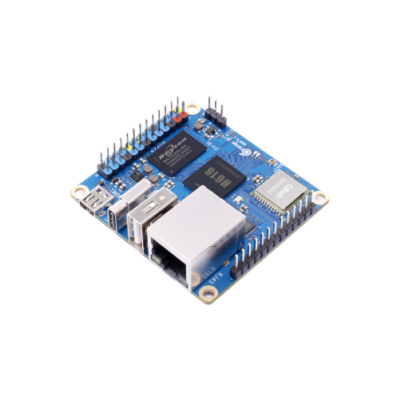
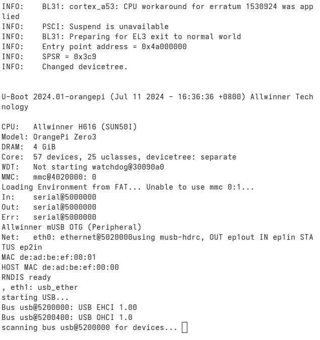

Linux Embebido en OrangePi Zero 3 - Allwinner H618 usando Docker

En esta guía aprenderemos a construir un sistema operativo Linux embebido en un OrangePi Zero 3 utilizando el procesador Allwinner H618 utilizando contenedores de Docker.
Primeros pasos
Para iniciar asegurate de tener docker instalado ademas de git.
Crea un directorio de trabajo llamado linux-dev o el nombre de tu preferencia y cambia al directorio.
mkdir linux-dev
cd linux-dev
A continuación se enumeran la serie de pasos de desarrollo del proyecto:
1. Descargar repositorios
git clone https://github.com/u-boot/u-boot.git --depth 1
git clone https://github.com/ARM-software/arm-trusted-firmware.git --depth 1
git clone -b orange-pi-6.1-sun50iw9 https://github.com/orangepi-xunlong/linux-orangepi.git --depth 1
# O elige la rama orange-pi-5.13-sunxi64
Lista tu directorio para verificar el contenido.
# Comando para listar
ls
Deberias tener algo así:
arm-trusted-firmware linux-orangepi u-boot
2. Construir las imágenes Docker
docker build -t uboot-builder docker/
docker build -f docker/Dockerfile.kernel -t linux-kernel-dev docker/
3. Ejecutar contenedor con volumen montado
# Opción 1: Contenedor temporal
docker run -it --rm -v $PWD:/home/builder uboot-builder bash
# Opción 2: Contenedor persistente con uboot-builder
docker run -it --name linux-dev --privileged -v $PWD:/home/builder uboot-builder bash
# Opción 3: Contenedor persistente con linux-kernel-dev
docker run -it --name linux-dev --privileged -v $PWD:/home/builder linux-kernel-dev bash
Iniciar el contenedor linux-dev existente
Si creaste un contenedor persistente ejecuta este comando, cada que quieras interactuar con el, de lo contrario utiliza la Opción 1 del paso anterior.
docker start -ai linux-dev
Cada que cierres o apagues el contenedor deberas iniciarlo como vimos anteriormente, los siguientes pasos se deben ejecutar cuando estes dentro de la instancia del contenedor de docker.
4. Compilación del bootloader
Compilar ARM Trusted Firmware (ATF)
Entra a la carpeta arm-trusted-firmware y compila el proyecto.
cd arm-trusted-firmware
# Ejecuta make <argumentos de entorno ej. PLAT= > <binario a generar Ej. bl13>
make PLAT=sun50i_h616 bl31
Esto generara un archivo en esta ruta build/sun50i_h616/release/bl31.bin.
Copiar bl31.bin a la raíz de U-Boot
cp build/sun50i_h616/release/bl31.bin ../u-boot/
Este paso es necesario para que no existan errores al compilar el U-Boot.
Compilar U-Boot
Si estas en la carpeta arm-trusted-firmware ve hacia atrás y entra en la carpeta u-boot.
# Salir de la carpeta anterior y entrar a u-boot
cd ../u-boot
# Compilar U-Boot
make orangepi_zero3_defconfig
make -j$(nproc) CROSS_COMPILE=aarch64-linux-gnu-
5. Grabar en la tarjeta SD
A continuación presione ctrl + d para salir de tu contenedor, esto te dejará en la carpeta raíz de tu proyecto, asegurate de ingresar de nuevo a la carpeta u-boot y desde la terminal de tu computadora ejecuta el siguiente comando para grabar el binario que compilamos en tu tarjeta SD.
En la opción of=/dev/sdx cambia por la ruta de tu dispositivo real, ejemplo: of=/dev/sdb
Advertencia
⚠️ Ten cuidado con este paso. Podrías dejar inutilizada tu PC si eliges el dispositivo equivocado.
sudo dd if=u-boot-sunxi-with-spl.bin of=/dev/sdx bs=1024 seek=8 status=progress
sync
6. Debug y comunicación serial
Verificar el dispositivo USB-Serial
sudo dmesg | grep -i tty
Salida esperada:
usb 3-2: ch341-uart converter now attached to ttyUSB0
Nota
La salida puede variar porque el dispositivo USB-Serial puede tener diferentes nombres en diferentes sistemas.
Conectar por serial
sudo screen /dev/ttyUSB0 115200
Conecta la placa a la corriente y si todo salió bien deberias darte algo parecido a la siguiente salida por terminal.

Ahora si ya tenemos el bootlader grabado y funcional en nuestra SD.
Para salir de screen: Ctrl + A, luego k.
7. Compilación del kernel
Configurar el kernel
Para la compilacion del kernel ingresamos a la carpeta linux-orangepi, el siguiente paso es descargar un archivo de configuración que necesitamos para el kernel, asi que nos dirigimos a la siguiente ruta arch/arm64/configs.
cd arch/arm64/configs
Estando dentro descargamos la configuracion:
wget https://raw.githubusercontent.com/orangepi-xunlong/orangepi-build/refs/heads/next/external/config/kernel/linux-6.1-sun50iw9-next.config
Renombramos el archivo como una defconfig.
mv linux-6.1-sun50iw9-next.config sun50iw9_defconfig
Y volvemos a nuestra ruta inicial del kernel.
Iniciando la compilación
Volvemos a nuestro proyecto raíz e ingresamos al contenedor, y desde ahí ingresamos de nuevo al proyecto linux-orangepi y compilamos la configuración del kernel.
make ARCH=arm64 CROSS_COMPILE=aarch64-linux-gnu- sun50iw9_defconfig
Opcional compilamos el menuconfig para ver los parametros.
# Para compilar y ver el menuconfig (Opcional)
make ARCH=arm64 CROSS_COMPILE=aarch64-linux-gnu- menuconfig
Compilar el kernel
Inciamos la compilación del kernel, esto podria demorar algunos minutos o 1 hora dependiendo de los recursos de tu PC.
Con este comando compilamos todos los recursos como el kernel, los modulos, y los devices trees.
make -j$(nproc) ARCH=arm64 CROSS_COMPILE=aarch64-linux-gnu-
Si la compilación se realizó exitosamente tendremos la imagen del kernel dentro de la carpeta arch/arm64/boot con el nombre de Image, y los devices trees compilados estaran en la carpeta arch/arm64/boot/dts/allwinner los archivos tendrán la extensión .dtb.
Próximos Pasos
En la siguiente sección seguiremos con la segunda parte del proyecto la cual consiste en construir el rootfs sistema de archivos principal de nuestro sistema Linux Embebido.